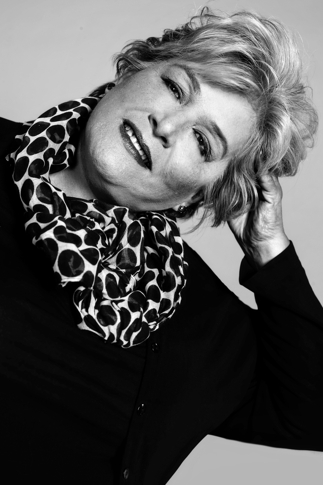
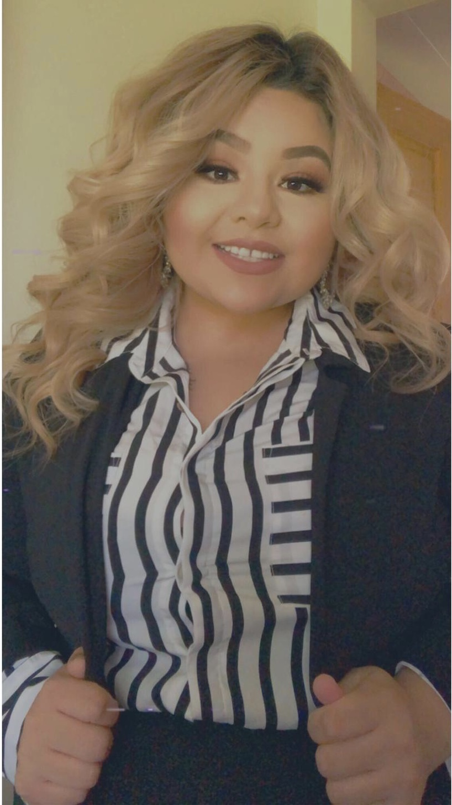

Ariel Casiraghi, is a beauty pageant entrepreneur, and as he developed his profession in training beautiful pageant ladies on the runway, poise, social etiquette, personal and profesional projection for many beauty queens, some for international competitions. Now Chairman and National Director of Miss Planet USA Organization. Concept and platform that inspires us as well new generations to take care of our planet, inspiring young people who aspire to make role models to take care of the planet and those who inhabit it.
Prominently known for his excellence in both pageantry and runway has been called "The Pharaoh of Beauty" for his significant role in producing and empowering beauty queens. As very early age he was a fanatic of Miss Venezuela Pageant, also of Miss Mexico, Miss Universe and many other renounce pageants. Ariel later became very involved with pageants and producing beautiful queens that till today they appreciate all the hard work he had and has invested on their preparation to participate in various pageants including international competitions. Ariel went to the University of Guadalajara Mexico, where he studied nursing. Mr Ariel has dedicated most of his life innovating and reinventing Himself as he always says...if you want to become successful you must help others and not say, what I’m I gaining from this?.. Ariel now as Chairman/CEO and National Director of Miss Planet USA. He recognizes that social and economic development depends on the sustainable management of our planet’s natural resources. He is therefore determined and promote Miss Planet USA together with Miss Planet International to promote the importance of conserving and sustainably using oceans and seas, freshwater resources, as well as forests, mountains and drylands and to protect biodiversity, ecosystems and wildlife. Him and Miss Planet USA executive team with a large group of volunteers are also determined to promote sustainable tourism, tackle water scarcity and water pollution, to strengthen cooperation on desertification, land degradation and drought and to promote resilience and disaster risk reduction. This is an Agenda of unprecedented scope and significance, says Ariel and as Miss Planet USA Chairman and National Director, I speak in behalf of my wonderful team and Miss Planet Organization that we are determined to campaign for the protection of our planet from degradation, including through sustainable consumption and production, sustainably managing its natural resources and taking urgent action on climate change, so that it can support the needs of the present and future generations.

Originally from Guadalajara, Mexico. He is 29 years old and is a licensed accountant. But is passionate about makeup and hair. At the age of 26 decided to take for the media of beauty. During this path he has been a part of many runways and beauty pageant shows as well as hair fashion shows. In addition to that he has specialized in events such as weddings and social events. His goal in life is to bring forward and enhance the beauty in every woman. Cesar Fernandez is a international makeup & hair artist willing to give all his knowledge of everything he knows to the Miss Planet USA platform.

My name is Monica and I am a native of Rome, the ‚ÄúEternal City‚Äù. I come from a multi-cultural background given that my father is Italian, and my mother is Mexican. As a child, that was not easy at times because the education I was receiving was combining the two cultures and I often felt a little out of place compared to my peers. Eventually though, I realized how lucky I was. In my frequent trips to Mexico, I was able to experience different realities, languages and even foods and my exposure to all these elements started contributing to my personal fulfillment and making me feel ‚Äúhappily different‚Äù. The lesson, for sure, was that I learned how to embrace diversity and see possibilities and this simple learning has been a key to enriching, shaping and completing my own life.I am generous and empathetic by nature with a true passion for all living beings (including humans üòä) I am always available to help the minorities or to fight for a good cause which is one of the reasons I have jumped at the chance to cooperate with Miss Planet USA and bring my expertise as an Executive Secretary, having worked in that role at Rome‚Äôs largest newspaper for many years. It‚Äôs a great honor for me to work with an organization that is dedicated to the most noble purpose I can think of, the preservation of our planet to make it a better place for the future generations. Beauty and social commitment holding hands, isn‚Äôt it great? Thanks!Monica Malori
I bring people, ideas, and inspiration together to make the world a better place.
Maria Venturini is a Latin American Designer who embarked on a fashion career and develop a line called Venturini Couture "A timeless and unique eco-fashion design affordable for everyone".
The romantic style of the designs have become a signature of the couture house inspired by high-end ateliers in Paris and Milan. The soft sensual style, fascinating details and exceptional tailoring is what makes Venturini Couture the go-to destination for high-end gowns, evening wear and ready to wear.
VENTURINI COUTURE IS A CELEBRATION OF FEMALE INGENUITY AND FEMININITY.
THE MINIMAL ROMANTIC SILHOUETTES COUPLE WITH SOPHISTICATED LINES USING RECYCLED AND HIGH-END FABRICS TELLS THE STORY OF WOMEN'S STRENGTH, CONFIDENCE AND SENSUALITY.
VENTURINI'S INSPIRATION IS ALWAYS NATURE and Venturini's collection are always inspire by natural fabrics, texture and earth tones.
VENTURINI COUTURE is committed to the promotion of sustainable designs using the Fashion Platform as Venturini's voice and vision.

Alex Siniscalchi A.K.A 'el-ale' was born and raised on the west side od the city of Caracas, Venezuela. He is one of the two that created the brand "Caracas Stencil Design". The urban mixes with anthropological elements in his work, producing images which make us reflect as a society.
Cindy Ortega 26 years old; Born In Zacatecas city, raised in Seattle Washington. She is an only daughter and a mother of 2 beautiful boys who she raised with the help of her wonderful parents. Passionate, cross-functional, creative, and results-driven marketing with over 4 years of experience. Cindy has helped companies grow by implementing online marketing. Rapid and sustainable user growth is her passion. Cindy admires the makeup industry it is one of her favorite hobby is she truly believes in natural and inner beauty. Women are just as beautiful without makeup as they are with it. Quote to live by: I hate how many people think glass half empty when their glass is really four fifths full. I am grateful when I have one drop in the glass because I know exactly what to do with it. -Gary Vaynerchuk In her free time she loves spending it with her boys, parents, and family over anything, but also enjoys cooking new dishes/off-roading/walking on the beach.
Simon is a Peruvian artist known for his impeccable lighting technique who has shown with his amazing work of painterly portraits that the key to success is to make things as simple as possible. His style and color palette refer to classical painters of the Renaissance, the Baroque, and the Rococo era like Raphael, Rembrandt, Caravaggio, Velásquez, Rubens, Boucher, Goya, among others. Simon's work combines a classic, painterly aesthetic with the finesse of modern portraiture.

Born and raised in Seattle, Washington. 26 years old, loves working on computers. He designed the website for Miss planet USA.


Copyright © 2020 Miss Planet USA - All Rights Reserved.
Miss Planet USA